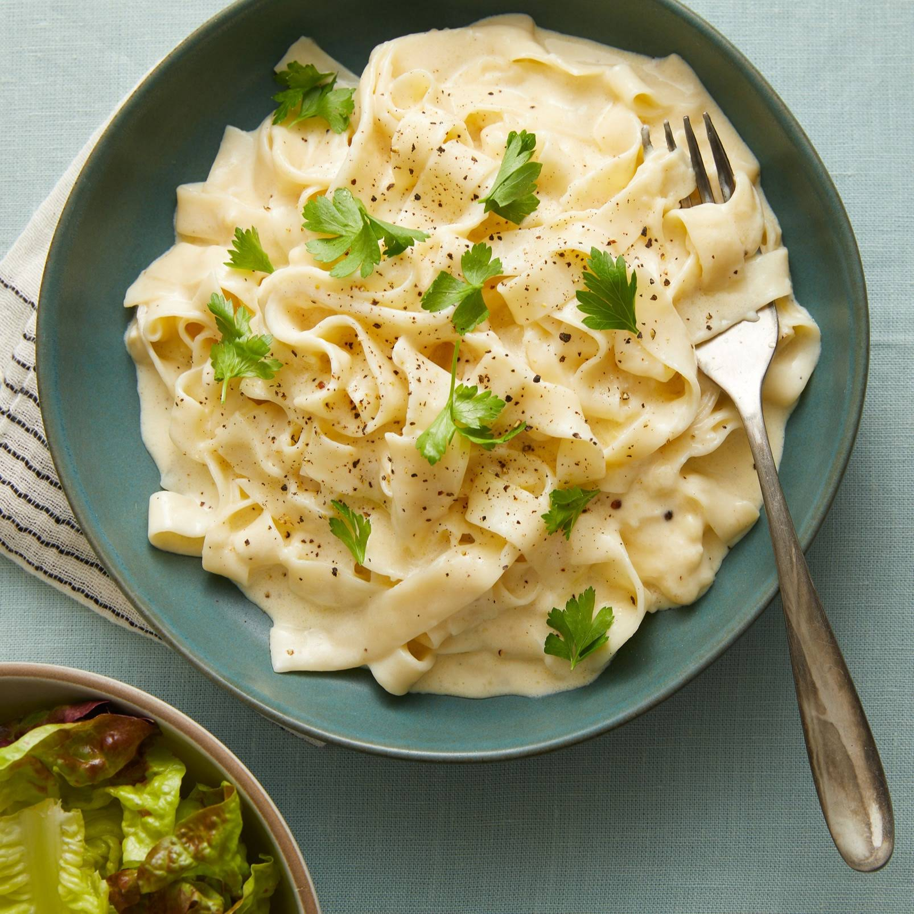
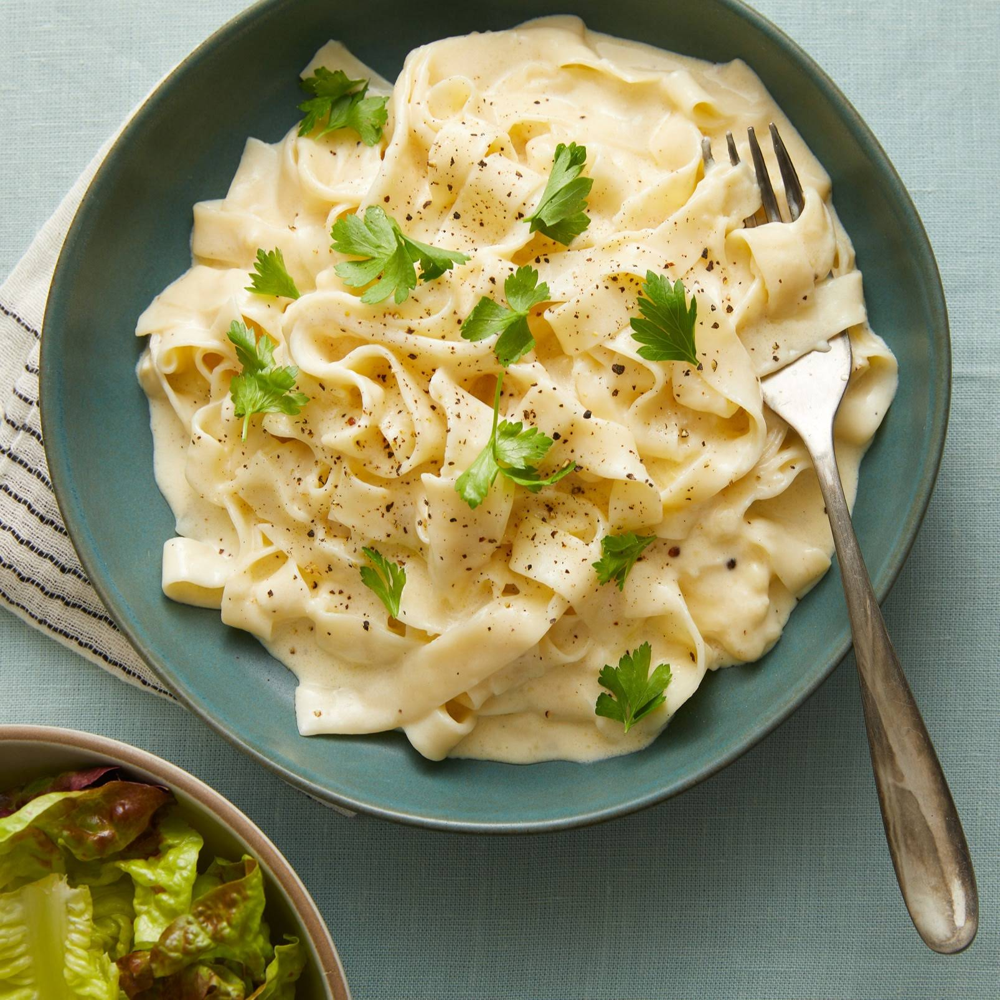

Fettuccine Alfredo
 

Description
Fettuccine Alfredo or fettuccine al burro is an Italian pasta dish of fresh fettuccine tossed with butter and Parmesan. As the cheese melts, it emulsifies the liquids to form a smooth and rich cheese sauce coating the pasta.